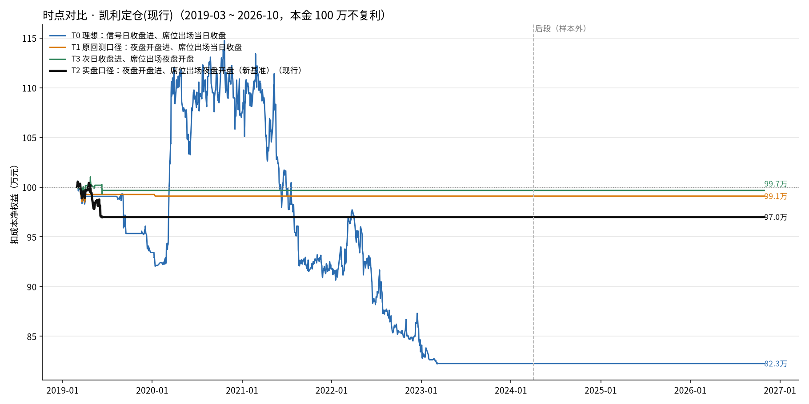
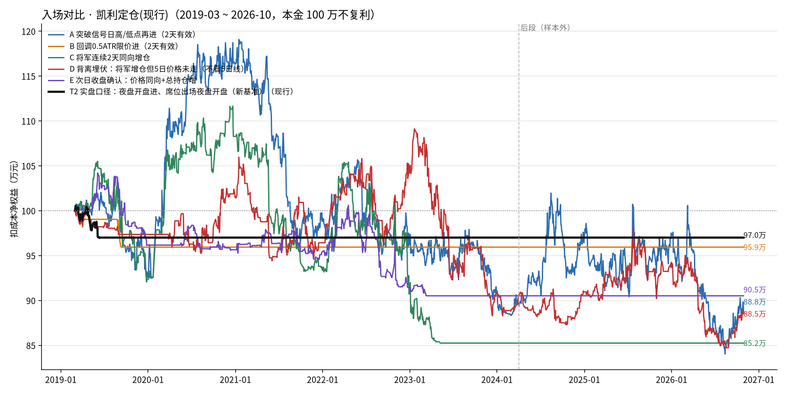
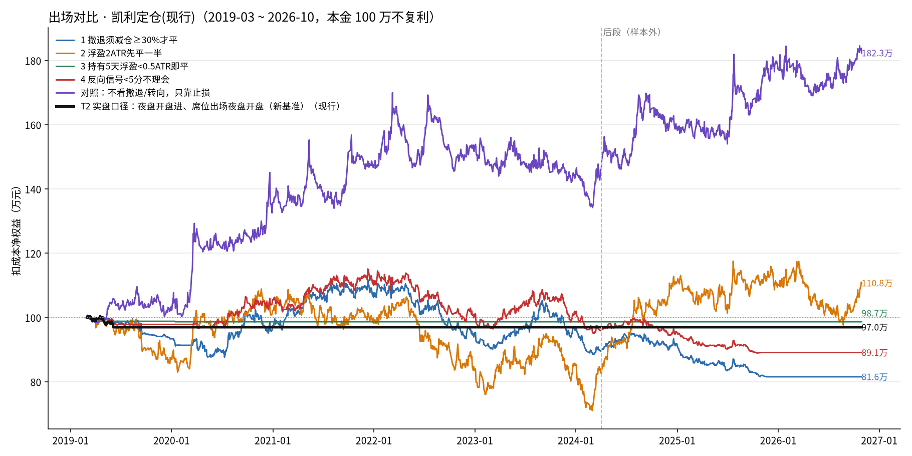

区间 2019-03-01 起，前段/后段分界 2024-04-01。本金 100 万，扣成本（每边 1 跳 + 万 0.5）。蓝色行 = 新基准（实盘口径）。“夜盘开盘”= 下一交易日开盘价（有夜盘的品种即 21:00）。



| 组 | 方案 | 笔数 | 撤单 | 胜率 | PF | 持有 | 净收益 | 年化 | 回撤 | 前段净 | 后段净 | 2019 | 2020 | 2021 | 2022 | 2023 | 2024 | 2025 | 2026 |
|---|---|---|---|---|---|---|---|---|---|---|---|---|---|---|---|---|---|---|---|
| 时点 | T0 理想：信号日收盘进、席位出场当日收盘 | 637 | 0 | 51.3% | 0.96 | 2.4 | -177,424 | -2.5% | 28.3% | -177,424 | 0 | -6.6万 | 13.9万 | -16.1万 | -7.4万 | -1.6万 | 0.0万 | 0.0万 | 0.0万 |
| 时点 | T1 原回测口径：夜盘开盘进、席位出场当日收盘 | 13 | 0 | 46.2% | 0.77 | 1.9 | -9,011 | -0.1% | 2.0% | -9,011 | 0 | -0.7万 | -0.2万 | 0.0万 | 0.0万 | 0.0万 | 0.0万 | 0.0万 | 0.0万 |
| 时点 | T2 实盘口径：夜盘开盘进、席位出场夜盘开盘（新基准） | 29 | 0 | 48.3% | 0.68 | 1.8 | -30,009 | -0.4% | 3.6% | -30,009 | 0 | -3.0万 | 0.0万 | 0.0万 | 0.0万 | 0.0万 | 0.0万 | 0.0万 | 0.0万 |
| 时点 | T3 次日收盘进、席位出场夜盘开盘 | 26 | 0 | 53.8% | 1.09 | 1.7 | -3,291 | -0.0% | 1.7% | -3,291 | 0 | -0.3万 | 0.0万 | 0.0万 | 0.0万 | 0.0万 | 0.0万 | 0.0万 | 0.0万 |
| 入场 | A 突破信号日高/低点再进（2天有效） | 1386 | 541 | 52.8% | 1.06 | 2.1 | -112,629 | -1.6% | 29.4% | -95,836 | -16,793 | -7.1万 | 23.5万 | -17.7万 | -1.6万 | -5.6万 | 5.8万 | 0.2万 | -8.7万 |
| 入场 | B 回调0.5ATR限价进（2天有效） | 21 | 123 | 42.9% | 0.32 | 2.9 | -40,631 | -0.5% | 4.1% | -40,631 | 0 | -4.1万 | 0.0万 | 0.0万 | 0.0万 | 0.0万 | 0.0万 | 0.0万 | 0.0万 |
| 入场 | C 将军连续2天同向增仓 | 359 | 0 | 50.1% | 0.95 | 3.1 | -147,545 | -2.1% | 23.6% | -147,545 | 0 | -7.6万 | 15.9万 | -14.5万 | -2.1万 | -6.5万 | 0.0万 | 0.0万 | 0.0万 |
| 入场 | D 背离埋伏：将军增仓但5日价格未走（不看5日线） | 409 | 0 | 51.3% | 0.98 | 4.7 | -113,428 | -1.6% | 22.4% | -99,713 | -13,715 | -2.6万 | 4.1万 | -5.0万 | 8.9万 | -15.0万 | 0.7万 | 2.9万 | -5.2万 |
| 入场 | E 次日收盘确认：价格同向+总持仓增 | 294 | 731 | 49.3% | 0.91 | 1.8 | -94,857 | -1.3% | 13.1% | -94,857 | 0 | -3.8万 | -0.5万 | -0.2万 | -4.1万 | -0.8万 | 0.0万 | 0.0万 | 0.0万 |
| 出场 | 1 撤退须减仓≥30%才平 | 1279 | 0 | 50.9% | 1.0 | 3.3 | -184,338 | -2.6% | 27.1% | -101,633 | -82,705 | -6.6万 | 2.8万 | 10.2万 | -12.2万 | 1.9万 | -5.7万 | -8.8万 | 0.0万 |
| 出场 | 2 浮盈2ATR先平一半 | 1984 | 0 | 57.1% | 1.1 | 2.6 | 97,889 | 1.2% | 34.8% | -138,371 | 236,260 | -12.7万 | 13.7万 | -1.6万 | -14.8万 | 1.2万 | 25.8万 | -0.3万 | -1.5万 |
| 出场 | 3 持有5天浮盈<0.5ATR即平 | 14 | 0 | 35.7% | 0.65 | 1.9 | -13,075 | -0.2% | 1.9% | -13,075 | 0 | -1.2万 | -0.2万 | 0.0万 | 0.0万 | 0.0万 | 0.0万 | 0.0万 | 0.0万 |
| 出场 | 4 反向信号<5分不理会 | 1241 | 0 | 52.2% | 1.02 | 3.1 | -108,926 | -1.5% | 22.7% | -38,054 | -70,872 | -2.1万 | 6.5万 | 5.8万 | -10.1万 | 1.9万 | -6.3万 | -6.6万 | 0.0万 |
| 出场 | 对照：不看撤退/转向，只靠止损 | 586 | 0 | 38.6% | 1.32 | 8.3 | 746,415 | 7.6% | 21.0% | 370,229 | 376,186 | -1.8万 | 35.1万 | 11.3万 | 0.6万 | -7.6万 | 15.7万 | 24.0万 | -2.7万 |